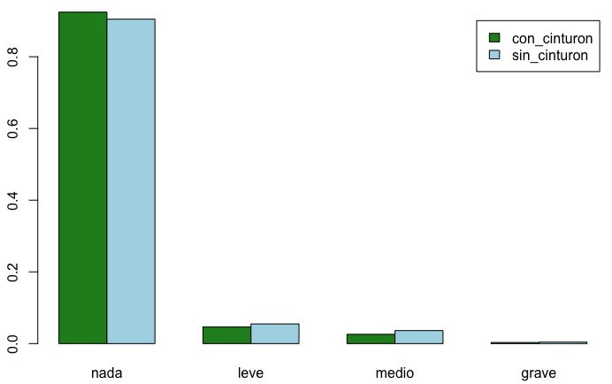

Capítulo 13 La prueba de Ji-Cuadrado
Cuando estudiamos estadística descriptiva, vimos que los datos a realizar y las gráicas a dibujar dependían del tipo de datos. Si teníamos una variable numérica, podíamos calcular medias, caurtiles, etc. y realizar histogramas, daigramas de cajas. Si era una cualitativa, podíamos dibujar un diagrama de barras, si eran dos cualitativas, una tabla de contingencia y diagramas de barras agrupados, etc.
Y lo mismo pasa con los contrastes de hipótesis. Tenemos diferentes tipos de pruebas en función de las variables: si tenemos una variable cualitativa con dos niveles, usamos un prop.test; si tenemos una varaible numérica, usamos un t-test; Si tenemos dos variables, una de ellas numéricaa, y la otra cualitativa, un ANOVA.
La siguiente prueba que vamos a estudiar es la de \(\chi^2\), pronunciado “ji-cuadrado” que nos sirve si tenemos una variable cualitativa con más de dos niveles, o dos variables cualitativas.
Uno nota lingüística: \(\chi\) es una letra griega que en Español se llama “ji” y en Catalán, “ki”. En Inglés se escribe “chi” y se pronuncia “kai”. Desgraciadamente lo habitual es hacer un híbrido y escribirlo en ingles y pronunciarlo a la española: “chi cuadrado”. La pronunciación correcta es “ji-cuadrado” en Español, “ki-quadrat” en Catalán y “kai-squared” en Inglés.
13.1 Prueba de ji-cuadrado de bondad de ajuste
En una distribución binomial sólo hay dos posibles resultados que
llamamos éxito'' yfracaso’’. Esto corresponde a una variable
cualitativa con sólo dos niveles y mediante un prop-test podemos
establecer si la proporción poblacional sigue o no algún valor
predicho, por ejemplo, si al lanzar una moneda obtenemos cara la mitad
de las veces. Pero muchas veces tenemos variables cualitativas con
más de dos niveles y queremos saber si la proporción de cada nivel se
ajusta a lo que debería. Es el caso del lanzamiento de un dado, con 6
posibles resultados. Una posibilidad es hacer un prop-test por cada
nivel: ¿ha salido el “1” 1/6 de las veces? ¿ha salido el “2” 1/6 de
las veces?… Pero como vimos al estudiar el ANOVA, hacer muchas
pruebas, 6 prop-test en este caso, nos crea un problema de equilibrio
entre la confianza de nuestro resultado y la precisión obtenida.
Como en aquel caso, lo que nos interesa es tener una única prueba que nos haga todas las comparaciones de golpe. Es decir, una única prueba que nos determine si el dado está cargado o no. Esta es la prueba de \(\chi^2\) de bondad de ajuste.
Si tiramos una moneda sólo hay dos posibilidades y el uso del prop-test es perfectamente adecuado. Pero si tiramos un dado tenemos 6 probabilidades. Si quisiéramos usar los prop-test tendríamos que hacer 6 y ver si la probabilidad de que salga un “1” es 1/6 o no; la probabilidad de que salga un “2” es 1/6 o no, etc. Supongamos que tiramos un dado 180 veces con los siguientes resultados:
1 2 3 4 5 6
33 38 25 24 27 33Sabemos que si el dado es “bueno” tocaría salir cada número 30 veces. Entendemos que es normal que no salga exactamente 30 veces, pero esos 38 doses nos preocupan un poco. ¿Cómo podríamos medir lo diferente que es la salida que hemos obtenido (en conjunto) con la salida teórica de un dado?
Pensando un poco es fácil pensar en la siguiente solución: miramos la diferencia entre cada salida y lo que debería haber salido y lo sumamos: \[3 + 8 + 5 + 6 + 3 + 3 = 28.\] En otras palabras, hacemos \[\sum |x_{o} - x_{t}|,\] siendo \(x_{o}\) el número de veces observado (lo que nos ha salido) y \(x_{t}\) el número de veces teórico que nos predice la teoría de la probabilidad.
Este método tiene dos problemas. Uno es técnico: el valor absoluto no es derivable en el 0 y es además una función complicada de usar. El otro es fundamental: cuantas más tiradas hagamos más grande nos saldrá la diferencia. Una diferencia de 5 puede ser malísimo si hemos tirado el dado 10 veces pero buenísimo si lo hemos tirado 100. Hemos de meter el número de tiradas que hemos hecho de alguna manera. Para eliminar el valor absoluto usamos la técnica habitual de sustituirlo por la diferencia al cuadrado. Y para meter el número de tiradas, dividimos estas diferencias por el número de veces teórico que tocaría salir. Entonces nos queda \[\chi^{2}_{0} = \sum \frac{(x_{0} - x_{t})^{2}}{x_{t}}.\] En nuestro ejemplo nos queda \[\chi^{2}_{0} = \frac{(33 - 30)^{2}}{30} + \frac{(38 - 30)^{2}}{30} + \frac{(25 - 30)^{2}}{30} + \frac{(24 - 30)^{2}}{30} + \frac{(27 - 30)^{2}}{30} + \frac{(33 - 30)^{2}}{30} = 5.067.\]
Este método tiene dos problemas. Uno es técnico: el valor absoluto no es derivable en el 0 y es además una función complicada de usar. El otro es fundamental: cuántas más tiradas hagamos más grande nos saldrá la diferencia. Una diferencia de 5 puede ser malísimo si hemos tirado el dado 10 veces pero buenísimo si lo hemos tirado 100. Hemos de meter de alguna manera en nuestra fórmula el número de tiradas que hemos hecho. Para eliminar el valor absoluto usamos la técnica habitual de sustituirlo por la diferencia al cuadrado. Y para meter el número de tiradas, dividimos estas diferencias por el número de veces teórico que tocaría salir. Entonces nos queda \[\chi^{2}_{0} = \sum \frac{(x_{0} - x_{t})^{2}}{x_{t}}.\] En nuestro ejemplo nos queda \[\chi^{2}_{0} = \frac{(33 - 30)^{2}}{30} + \frac{(38 - 30)^{2}}{30} + \frac{(25 - 30)^{2}}{30} + \frac{(24 - 30)^{2}}{30} + \frac{(27 - 30)^{2}}{30} + \frac{(33 - 30)^{2}}{30} = 5.067.\]
Pues ya tenemos una medida: \(\chi^{2}_{0} = 5.067\) (en esta prueba el valor muestral se escribe \(\chi^{2}_{0}\) y no \(\hat{\chi}^{2}\). El motivo es probablemente tipográfico: el superíndice y el curcunflejo se molestan). ¿Pero eso es mucho o poco? Por suerte la variable aleatoria que hemos calculado, \(\chi^{2}_{0}\), tiene una distribución conocida y podemos saber lo probable que es tener un valor como \(5.067\) o peor. ¿Qué queremos decir con “peor”? Pues peor quiere decir más alejado de la distribución teórica, y por lo tanto un valor \(\chi^{2}_{0}\) aún mayor que el \(5.067\) de nuestra muestra. La distribución se llama, como podríamos suponer, \(\chi^{2}\). Esta distribución tiene un parámetro llamado grados de libertad. En este caso tenemos 5 grados de libertad: sólo hay 5 valores independientes ya que si sabemos qué ha salido para 5 cualesquiera de los valores del dado podemos calcular cuánto ha salido en el otro. Naturalmente, R tiene funciones para calcular probabilidades según esta distribución. Usando la función calculamos la probabilidad de que nos haya salido un valor \(\chi^{2}_{0} = 5.067\) o mayor: . La probabilidad calculada es \(0.408\), casi un 41%.
Pongamos lo que hemos hecho en la forma de un contraste de hipótesis. La
hipótesis nula es que el dado sigue una una distribución determinada
(en este caso 1/6 en todos los casos); la hipótesis alternativa es
que no la sigue; calculamos como estadístico \(\chi^{2}_{0}\); y
obtenemos un p-valor: la probabilidad de que el valor del estadístico sea
como el calculado o peor suponiendo cierta la hipótesis nula. Escribamos este contraste de hipótesis de forma
esquemática: La hipótesis nula es H0: \(\chi^{2} = 0.\) Este valor ocurre su la variable sigue la distribución de probabilidad fijada. La hipótesis alternativa es Ha:\(\chi^{2} > 0.\) Esto ocurre cuando la variable no sigue la distribución de probabilidad fijada. Calculamos el valor muestral (es costumbre usar \(\chi^{2}_{0}\) y no \(\hat{\chi}^2\)) \[\chi^{2}_{0} = \sum \frac{(\mbox{observado} - \mbox{teórico})^{2}}{\mbox{teórico}}.\]
El p-valor es Prob[\(\chi^{2} > \chi^{2}_{0} \; |\) H0]. Esto lo podemos calcular en R con la instrucción pchisq($\chi^{2}_{0}$, df = n-1, lower.tail = FALSE)
Después, con el p-valor, las gráficas, información adicional, nuestra experiencia y todo lo que podamos, tomamos la decisión que corresponda.
En este caso, si las probabilidades son iguales (el dado es justo), la probabilidad de obtener valores como los que vemos o más alejados de “todos iguales a 1/6” es del 41%. Luego no tenemos evidencia para creer que no se cumple la hipótesis nula, es decir, no tenemos evidencia para creer que el dado está cargado.
Esta prueba recibe el nombre de prueba \(\chi^2\) de bondad de ajuste: nos da una indicación de lo bien (o mal) que se ajusta la variable aleatoria a una distribución de probabilidad dada. Veamos otro ejemplo.
Antes de una elecciones generales un periódico hizo una encuesta a 2400 personas y obtuvo los siguientes resultados:
PSOE PP Podemos Ciudadanos IU
Encuesta 809 655 382 226 180En las elecciones se obtuvieron las siguientes proporciones:
PSOE PP Podemos Ciudadanos IU
Elecciones 0,3543 0,2676 0,1484 0,0928 0,0689¿Podemos considerar que la encuesta hizo una buena predicción del resultado de las elecciones?
Si somos concienzudos y hacemos, como debemos, unas comprobaciones previas, notaremos dos problemas: se encuestaron a 2400 personas pero aqui sólo aparecen 2252, y en el resultado de las elecciones las proporciones no suman 1.0 sino 0.932. El motivo es claro: sólo tenemos los resultados de los 5 partidos con más votos.
Hay dos formas de resolver este problema. Uno es eliminar las opciones minoritarias: aunque se haya entrevistado a 2400 personas, sólo consideramos las 2252 respuestas de los 5 partidos minoritarios. Esto implica también reescalar los resultados de las elecciones para que sumen 1.000. Para ello dividimos lo que tenemos por la suma. En este caso dividimos entre 0.932: el PSOE tendría una proporción ajustada de 0.3543/0.932 = 0.3802; el PP de 0.2676/0.932 = 0.2871, etc. Así las proporciones suman 1.
La otra forma de resolver el problema es agrupar todas las opciones minoritarias en una sola, que podemos llamar “Otros” y le asignamos las \(2400-2252 = 148\) encuestas y la proporción de votos que nos falta: \(1.0 - 0.932 = 0.068\). Cuál de las dos soluciones escogemos dependerá de cada caso.
Vamos a usar la primera opción. Los resultados electorales reescalados son:
PSOE PP Podemos Ciudadanos IU
Elecciones 0,3802 0,2871 0,1592 0,0996 0,0739Calculemos según las elecciones cuál debería haber sido la respuesta “ideal” a la encuesta:
Encuesta a 2252 personas:
PSOE PP Podemos Ciudadanos IU
Encuesta 809 655 382 226 180
Ideal 856.1 646.6 358.6 224.2 166.5No hay ningún problema que los valores teóricos tengan decimales. Son eso, valores teóricos y no personas. Ahora podemos calcular el estadístico \(\chi^{2}_{0}\): \[\begin{eqnarray*} \chi^{2}_{0} & = & \frac{(809 - 856.10)^{2}}{856.10} + \frac{(655-646.60)^{2}}{646.60} + \frac{(382-358.58)^{2}}{358.58} + \\ & & + \frac{(226-224.23)^{2}}{224.23} + \frac{(180-166.48)^{2}}{166.48}\\ & = & 5.34. \end{eqnarray*}\]
Ahora calculamos el p-valor con la ayuda de R: pchisq(5.34, 4, lower.tail = FALSE). Obtenemos esta probabilidad es \(0.254\), un 25%.
Interpretemos: Si los votos en el momento de la encuesta se distribuyen como indica el resultado de las elecciones hay un 25% de probabilidades de que, por variabilidad del muestreo, en la encuesta obtengamos datos como estos o peores (más separados de lo que pasó en las elecciones). Otra vez no tenemos evidencia sufieciente para pensar que lo obtenido en la encuesta sea diferente de lo que se obtuvo en las elecciones. Podemos considerar que la encuesta hizo una predicción adecuada de los resultados electorales.
13.2 Prueba \(\chi^2\) de bondad de ajuste con R
Hemos visto como calcular el estadístico \(\chi^{2}_{0}\) y el p-valor
con pchisq(). Pero, como podíamos suponer, R tiene una
función que calcula la prueba \(\chi^2\) de bondad de ajuste
directamente: chisq.test().
Para el caso de bondad de ajuste, la función tiene 3 parámetros:
pchisq.test(x, p = rep(1/length(x), length(x)), rescale.p = FALSE).
El primer parámetro, x, es el vector de valores obtenidos en
nuestra observación o experimento. El segundo parámetro, p,
es el vector de probabilidades a la que suponemos se ajusta
x. Debe tener la misma longitud que x y por defecto
toma el valor de que todas las probabilidades sean iguales. El tercer
parámetro, rescale.p, es para el caso que hayamos eliminado
algunos casos minoritario y queremos que reescale el vector de
probabilidades para que sume 1. Si mantenemos el valor por defecto
(no se reescala) y el vector de probabilidades no suma 1, nos dará un
error.
Al usar esta función, la hipótesis nula es que el vector x
sigue la distribucion de probabilidades de p y la
alternativa es que no la sigue. La función nos calcula el estadístico
\(\chi^{2}_{0}\) y el p-valor.
Veamos el uso de esta función con nuestros dos ejemplos.
El dado. Es el caso más simple. Debemos introducir lo que hemos obtenido lanzando el dado y como nuestra distribución de probabilidades es que todas sean iguales y este es el valor por defecto, no hay que escribirlo. Entonces queda:
##
## Chi-squared test for given probabilities
##
## data: c(33, 38, 25, 24, 27, 33)
## X-squared = 5.0667, df = 5, p-value = 0.4078Nos sale exactamente lo mismo: \(\chi^{2}_{0}\) = 5.0667 y un p-valor
de 0.4078.
La encuesta. Este caso es un poco más complejo y tiene más posibilidades que vamos a explorar. Empezamos por crear las variables:
Pero si hacemos la prueba, chisq.test(encuesta, p = elecciones)
obtenemos un mensaje de error:
Error in chisq.test(encuesta, p = elecciones) :
probabilities must sum to 1.R nos ha pillado que las probabilidades no suman 1. Si reescalamos se arregla todo:
##
## Chi-squared test for given probabilities
##
## data: encuesta
## X-squared = 5.341, df = 4, p-value = 0.2541y obtenemos lo mismo que cuando lo hicimos a mano.
¿Y si hubiéramos añadido el apartado de “otros” qué hbiera salido? Es fácil hacerlo. Creamos dos nuevas variables añadiendo lo que nos falta y hacemos la prueba:
encuestaCom = c(encuesta,148)
eleccionesCom = c(elecciones,0.068)
chisq.test(encuestaCom,p = eleccionesCom)##
## Chi-squared test for given probabilities
##
## data: encuestaCom
## X-squared = 6.8963, df = 5, p-value = 0.2285El p-valor baja un poquito, pero esencialmente no cambia.
13.2.1 Problematicidad: el aviso de chisq.test()
Supongamos que el objetivo de resultados académicos de esta asignatura fuera tener un 15% de sobresalientes, un 30% de notables, un 40% de aprobados, un 10% de suspensos y un 5% de no presentados. Al final de un curso con 70 matriculados obtenemos 12 sobresalientes, 18 notables, 26 aprobados, 10 suspensos y 4 no presentados. Queremos saber si podemos considerar que hemos cumplido los objetivos. Hacemos un \(\chi^2\) de bondad de ajuste con R:
## Warning in chisq.test(resAc, p = obj): Chi-squared approximation may be
## incorrect##
## Chi-squared test for given probabilities
##
## data: resAc
## X-squared = 2.1429, df = 4, p-value = 0.7095El p-valor es muy alto, lo que nos puede llevar a pensar que el ajuste es adecuado, pero obtenemos un aviso de que los resultados pueden ser incorrectos. ¿Qué ha pasado? Lo que ha pasado es que nuestros datos son demasiado problemáticos. Veamos por qué.
Al calcular \(\chi^{2}_{0}\) cada sumando es una fracción de (obtenido – teórico)\(^{2}\)/teórico. Si el valor teórico en algún caso es muy pequeño esa fraccción será muy grande y dominará sobre las demás. Y además cualquier pequeño cambio para este nivel minoritario representará un cambio muy grande en el conjunto. En nuestro ejemplo, un no presentado más o menos puede cambiarlo todo. Por eso los datos son problemáticos.
Es importante darse cuenta lo que convierte los datos en problemáticos no son los resultados obtenidos, sino los valores teóricos que deberíamos obtener. En este caso no nos molesta los 4 no presentados obtenidos, sino que teóricamente deberíamos tener 3,5 (un 5% de 70). En general, el aviso aparece si el número teórico que deberíamos obtener para uno o más niveles es menor que 5.
La manera más adecuada de resolver el problema es de previsión: un breve estudio preliminar nos puede indicar las proporciones aproximadas que vamos a obtener y entonces diseñamos el experimento de manera que la muestra sea de tamaño suficiente. Pero a veces calculamos mal y tras conseguir la muestra tenemos algún nivel con un valor teórico demasiado bajo. O no podemos elegir el tamaño de la muestra. Por ejemplo en este caso tenemos los alumnos que tenemos y no podemos conseguir más.
Ya vimos las soluciones posibles: eliminar los no presentados y reescalar las probabilidades o unir niveles. En este caso tiene sentido unir los no presentados con los suspensos. Lo hacemos así:
##
## Chi-squared test for given probabilities
##
## data: resAc2
## X-squared = 1.9524, df = 3, p-value = 0.5823El aviso ha desaparecido. Tenemos un p-valor de 0,58, lo que nos indica que no hay evidencia para pensar que no se hayan cumplido los objetivos.
Ya hemos visto que la prueba de \(\chi^2\) de bondad de ajuste es una extensión del prop-test si tenemos una variable cualitativa con más de dos niveles. Vamos a extender ahora al caso de tener dos variables cualitativas. En este caso tenemos dos pruebas de \(\chi^2\): la de homogeneidad y la de independencia, que como veremos, es en el fondo la misma prueba.
13.3 La prueba \(\chi^2\) de homogeneidad
Cuando empezaron a utilizarse los cinturones de seguridad en los coches había dudas de su efectividad. Incluso había algunos que defendían que eran perjudiciales y era más seguro ir sin cinturón. Para saber si hay algo de cierto en estas dudas, se recogieron datos de accidentes en los que estuvieron involucradas 86 769 personas. De estas 13 861 llevaban cinturón y en 72 908, no. Se clasificaron los daños recibidos por cada persona involucrada en “nada” (sin daños), “leve”, “medio” y “grave”. Los datos, en forma tabular, son los siguientes:
| nada | leve | medio | grave | Total | |
|---|---|---|---|---|---|
| con cinturón | 12 813 | 647 | 359 | 42 | 13 861 |
| sin cinturón | 65 963 | 4000 | 2642 | 303 | 72 908 |
| Total | 78 776 | 4647 | 3001 | 345 | 86 769 |
Queremos saber si los que llevaban cinturón salieron mejor parados que los que no.
Empecemos por mostrar los datos gráficamente. En la figura siguiente representemos los porcentajes de personas con y sin cinturon para cada una de los niveles de gravedad de los daños.

No parece que haya mucha diferencia, aunque vemos en la tabla que la diferencia mayor es entre los “grave” y esta diferencia apenas se ve en el gráfico.
Queremos aplicar la misma idea que la prueba \(\chi^2\) de bondad de ajuste: sumar las diferencias al cuadrado de los valores observados con los teóricos. ¿Pero cuáles son los valores teóricos? No tenemos una distribución de probabilidad de la que partir.
Vamos a suponer que la distribución de daños entre los que llevaban cinturón es la misma que entre los que no la llevaban. No sé cuál es esa distribución, pero supongamos que es la misma en ambos casos. ¿Cuántos casos debería haber en cada una de las 8 celdas de la tabla?
Queremos una tabla con los mismo valores que tenemos en los totales de filas y columnas pero que tengan en ambas filas la misma distribución. Nótese que no hay ninguna diferencia a priori entre las dos variables, por lo tanto podríamos buscar que tuvieran las mismas distribuciones en las columnas. Los resultados serían idénticos. Fijémonos en la primera columna. Queremos que haya un total de 78 776 y que su proporción sea de 13 861 a 72 908. No es difícil ver que queremos \[\frac{78~776}{13~861 + 72~908}\times 13~861 = 12~584,15\] en la fila superior y \[\frac{78~776}{13~861 + 72~908}\times 72~908 = 66~191,85\] en la fila inferior.
Repetimos para todas las columnas y obtenemos la tabla de valores teóricos siguiente:
| nada | leve | medio | grave | Total | |
|---|---|---|---|---|---|
| con cinturón | 12 584,15 | 742,34 | 479,40 | 55,11 | 13 861 |
| sin cinturón | 66 191,85 | 3904,66 | 2521,60 | 289,89 | 72 908 |
| Total | 78 776 | 4647 | 3001 | 345 | 86 769 |
Ahora podemos calcular el estadístico \(\chi_{0}^{2}\) igual que lo hacíamos en el caso de bondad de ajuste: \[\chi_{0}^{2} = \frac{(12~813 - 12~584,15)^{2}}{12~584,15} + \frac{(647-742,34)^{2}}{742,34} + \cdots + \frac{(303-289,89)^{2}}{289,89} = 59,22\]
El número de grados de libertad es el número de filas menos uno por el número de columnas menos uno: \((4-1)(2-1) = 3\): si nos dan los totales y el valor de 3 de las celdas, podemos reconstruir la tabla entera.
Ahora podemos calcular la probabilidad de, si las distribuciones
fueran iguales, obtener un valor de \(\chi_{0}^{2}\) como este o aún
mayor: pchisq(59.224, 3, lower.tail = FALSE).La
probabilidad es de \(8,6\times 10^{-13}\), es decir, minúscula. Lo más
probable es que las distribuciones sean diferentes entre los que
lleven cinturón y los que no. Es decir, que a la hora de sufrir daños
en un accidente no es lo mismo llevar cinturón que no. La prueba de
\(\chi^2\) no nos dice cuál es “mejor”, sólo que son distintos. Mirando los
datos y las gráficas hemos de establecer qué diferencias hay y lo
importantes que son. En este caso vemos que los que llevan cinturón
tienen una mayor probabilidad de no sufrir ningún daño, una pequeña
menor probabilidad de tener daños leves o medios y una probabilidad
bastante menor de sufrir daños graves. Vemos que hay una clara
correlación entre llevar cinturón y la gravedad de las lesiones en un
accidente. Por medios no estadísticos, podemos establecer que llevar
cinturón causa una disminución de las lesiones, sobre todo de las
graves, en caso de accidente.
13.3.1 Definición formal
Generalicemos lo que hemos hecho en este ejemplo. Tenemos dos variables, que llamaremos A y B, ambas cualitativas. La variable A tiene niveles \(a_{1}, \dots, a_{i}, \dots, a_{n}\) y la variable B tiene niveles \(b_{1}, \dots, b_{j}, \dots, b_{m}\). Los valores observados \(o_{ij}\) los tenemos en la tabla de contingencias de frecuencias absolutas es:
\[ \begin{array}{c|ccccc|c} & b_{1} & … & b_{j} & … & b_{m} & Totales\\\hline a_{1} & o_{11} & … &o_{1j} & … & o_{1m} & T_{a1} \\ … & … & … & … & … & … & … \\ a_{i} & o_{i1} & … &o_{ij} & … & o_{im} & T_{ai} \\ … & … & … & … & … & … & … \\ a_{n} & o_{n1} & … &o_{nj} & … & o_{nm} & T_{an} \\\hline Totales & T_{b1} & … & T_{bj} & … & T_{bm} & T \end{array}\]
Los totales de fila \(T_{ai} = o_{i1} + \cdots + o_{ij} + \cdots + o_{im}\) son el total de individuos que hay en cada nivel de la variable A y análogamente con los totales de columnas \(T_{bj}\). Naturalmente, \(T\) es el total de individuos de la tabla.
Para calcular los valores teóricos \(t_{ij}\) seguimos lo hecho en el ejemplo. Vemos entonces que son \[t_{ij} = \frac{T_{bj}}{T} \cdot T_{ai} = \frac{T_{ai}\cdot T_{bj}}{T}\] Este cálculo es simétrico en filas y columnas, es decir, si trasponemos la tabla y convertimos las filas en columnas y viceversa, obtenemos los mismos valores teóricos, como debe ser.
Con los valores observados y teóricos, el valor de \(\chi_{0}^{2}\) es
\[\chi_{0}^{2} = \sum_{i,j} \frac{(o_{ij} - t_{ij})^{2}}{t_{ij}}\]
Y con este valor de \(\chi_{0}^{2}\) podemos calcular el p-valor usando la distribución \(\chi^{2}\) con \((n-1)(m-1)\) grados de libertad.
13.3.2 Prueba \(\chi^2\) como contraste de hipótesis
Reescribamos lo visto de manera formal. Tenemos dos variables cualitativas, en el ejemplo, una variable es el cinturón, con dos niveles: “con” y “sin”; la otra variable es el nivel de lesiones tras el accidente, con cuatro niveles “nada”, “leve”, “medio” y “grave”. La hipótesis nula es H0: \(\chi_{0}^{2} = 0\) que sucede si una variable sigue la misma distribución con respecto a los niveles de la otra variable (es homogenea). La hipótesis alternativa es Ha: \(\chi_{0}^{2} > 0\), que sucede cuando no siguen la misma distribución.. El estadístico es \(\chi_{0}^{2}\), el sumatorio de (observado – teórico)\(^{2}\)/teórico. Los valores teóricos se calculan fácilmente a partir de los observados. La distribución es una \(\chi^2\) y podemos calcular el p-valor: la probabilidad, suponiendo cierta la hipótesis nula, de obtener un valor de \(\chi_{0}^{2}\) como el obtenido o mayor.
13.3.3 Prueba \(\chi^2\) de homogeneidad con R
Hemos visto como calcular el estadístico \(\chi^{2}_{0}\) y el p-valor
con pchisq(). También hemos visto que es necesario calcular
previemante los valores esperados. No es que sea difícil, pero es un
tanto largo y complejo. Es más conveniente usar chisq.test().
En el caso de la prueba de homogeneidad hemos de darle los datos como
una matriz de observaciones. No es necesario dar las
probabilidades, que ni siquiera existen. Creamos los vectores con
(con cinturón) y sin (sin cinturón) la matriz y añadimos
nombres para que sea más legible. A partir de estos dos vectores
creamos la matriz con la instrucción rbind():
con = c(12813, 647,359,42)
names(con) = c("nada", "leve", "medio", "grave")
sin = c(65963,4000,2642,303)
names(sin) = c("nada", "leve", "medio", "grave")
cint = rbind(con,sin)Teniendo la matriz, la instrucción chisq.test(cint) nos da lo que queremos:
##
## Pearson's Chi-squared test
##
## data: cint
## X-squared = 59.224, df = 3, p-value = 8.61e-1313.4 La prueba \(\chi^{2}\) de independencia
Como vimos al estudiar teoría de probabilidad, decimos que dos variables aleatorias A y B son independientes si y sólo si Prob[A y B] = Prob[A]\(\cdot\)Prob[B] para cualquier par de valores que puedan tomar las variables. Si A y B son variables discretas y finitas, podemos estudiar la independencia de dos variables mediante un experimento estadístico. Para ello debemos coger una muestra y comparar en conjunto las probabilidades Prob[A y B] y Prob[A]\(\cdot\)Prob[B]. Como estos estudios conjuntos los hemos hecho con una prueba de \(\chi^2\), parece razonable pensar que podemos usar una prueba de \(\chi^2\) para determinar la independencia de probabilidad de dos variables. Veamos cómo se hace.
Hemos cogido nuestra muestra y esto da lugar a una tabla de contingencia de valores observados como la que hemos mostrado anteriormente y reproducimos aquí:
\[ \begin{array}{c|ccccc|c} & b_{1} & … & b_{j} & … & b_{m} & Totales\\\hline a_{1} & o_{11} & … &o_{1j} & … & o_{1m} & T_{a1} \\ … & … & … & … & … & … & … \\ a_{i} & o_{i1} & … &o_{ij} & … & o_{im} & T_{ai} \\ … & … & … & … & … & … & … \\ a_{n} & o_{n1} & … &o_{nj} & … & o_{nm} & T_{an} \\\hline Totales & T_{b1} & … & T_{bj} & … & T_{bm} & T \end{array} \]
De esta tabla podemos leer la probabilidad Prob[(A = \(a_{i}\)) y (B = \(b_{j}\))]: es \(o_{ij}/T\). Esto quiere decir que \(o_{ij}\) = Prob[(A = \(a_{i}\)) y (B = \(b_{j}\))]\(\cdot T\). Para poder comparar, hemos de calcular cuántos teóricamente deberíamos tener si la probabilidad fuera el producto de probabilidades. Es fácil ver que es: \[t_{ij} = \mbox{Prob[A } = a_{i}] \cdot \mbox{Prob[B } = b_{j}] \cdot \mbox{T}\] Las dos probabilidades Prob[A = \(a_{i}\)] y Prob[B = \(b_{j}\)] también las podemos sacar de la tabla: \[ \mbox{Prob[A } = a_{i}] = \frac{T_{ai}}{T} \quad \mbox{y} \quad \mbox{Prob[B } = b_{j}] = \frac{T_{bj}}{T}.\] Y nos queda \[t_{ij} = \frac{T_{ai}}{T} \cdot \frac{T_{bj}}{T} \cdot T = \frac{T_{ai}\cdot T_{bj}}{T}\] Que es exactamente el mismo valor teórico que habíamos obtenido en la prueba de homogeneidad. Por lo tanto, desde el punto de vista del cálculo, las pruebas de homogeneidad y de independencia son la misma prueba.
Si lo pensamos un poco, es lo natural: si, por ejemplo, el color de ojos fuera independiente del color de pelo, entonces podríamos esperar que para cada color de pelo la distribución de color de ojos fuera siempre la misma. Como no lo es, sabemos que no son independientes. Y análogamente, si vemos que hay la misma distribución del color de pelo para cada color de ojos, querría decir que ambos colores son independentes. Como las distribuciones no son iguales, establecemos que hay una dependencia.
En conclusión, la prueba de \(\chi^2\) de homogeneidad y la prueba de \(\chi^2\) de independencia son en el fondo la misma prueba. Lo que cambia es la forma de plantear la pregunta.
Hay una diferencia importante que no tratamos aquí: el diseño de un experimento donde queremos estudiar la independencia es diferente del diseño que haríamos en el caso de homogeneidad. Dado que en esta asignatura no estudiamos diseño de experimentos, podemos considerar la diferencia entre ambas pruebas de \(\chi^2\) una cuestión de nomenclatura y nada más. ***
13.4.1 Prueba \(\chi^2\) de independencia como contraste de hipótesis
¿Cuál es la hipótesis nula en la prueba de \(\chi^2\) de independencia? Tiene que ser “la misma” que en el caso de homogeneidad. Como acabamos de ver, si hay homogeneidad, es que tenemos independencia. Luego, informalmente, la hipótesis nula es que hay independencia, y la alternativa es que no, que hay dependencias entre las variables. Formalmente, la nula es que \(\chi^{2}_{0} = 0\) y la alternativa es que \(\chi^{2}_{0} > 0\). Formamente en el contraste de hipótesis la hipótesis nula es H0: \(\chi^{2} = 0\), que es lo que tendríamos si las variables fueran independientes. La hipótesis alternativa es Ha: \(\chi^{2} > 0\), que es lo que debe aarecer si las variables no son independientes. A partir de la muestra calculamos \[\chi^{2}_{0} = \sum \frac{(\mbox{observado} - \mbox{teórico})^{2}}{\mbox{teórico}}.\]
Esto nos permite calcular el p-valor como Prob[\(X > \chi^{2}_{0} \; |\; \chi^{2} = 0\)].
13.4.2 Un ejemplo
Queremos saber si el consumo de tabaco en adolescentes depende del
sexo. Usamos el conjunto de datos samhda del paquete UsingR
que contiene datos del comportamiento de chicos en edad escolar.
Usamos dos variables: amt.smoke, que indica la cantidad de
días que ha fumado en el último mes, y la variable gender,
con el sexo. La codificación de las variables es la siguiente:
| amt.smoke | gender |
|---|---|
| 1: todos los días | 1: hombre |
| 2: 20 a 29 días | 2: mujer |
| 3: 10 a 19 días | 7: NS/NC |
| 4: 6 a 9 días | |
| 5: 3 a 5 días | |
| 6: 1 a 2 días | |
| 7: ningún día | |
| 98 y 99: NS/NC |
Empezamos por crear un data frame reducido, que llamaremos Aux
con las dos variables que nos interesan y quitando los NS/NC. Después
crearemos la tabla de contingencias de frecuencias absolutas.
Llamaremos esta tabla TabSex:
library(UsingR)
Aux = subset(samhda, amt.smoke < 98 & gender < 7,
select = c( "gender", "amt.smoke"))
TabSex = table(Aux)La tabla resultante es la siguiente:
amt.smoke
gender 1 2 3 4 5 6 7
1 16 3 5 6 7 24 64
2 16 4 8 4 7 19 40Vemos que dados algunos valores bajos, sospechamos que al hacer el \(\chi^2\) tendremos el aviso de la función. Antes de seguir, lo comprobamos. Y efectivamente es así:
## Warning in chisq.test(TabSex): Chi-squared approximation may be incorrect##
## Pearson's Chi-squared test
##
## data: TabSex
## X-squared = 4.1468, df = 6, p-value = 0.6568Podemos juntar las columnas con valores 2 y 3 por un lado y con valores 4 y 5 por otro. Así tendríamos los niveles “Siempre”, “A menudo”, “Ocasionalmente”, “Casi nunca” y “Nunca”, lo que parece bastante razonable.
TabSex2 = cbind(TabSex[,1], TabSex[,2] + TabSex[,3],
TabSex[,4] + TabSex[,5], TabSex[,6], TabSex[,7])
colnames(TabSex2) = c("Siempre", "A menudo", "Ocasionalmente",
"Casi nunca", "Nunca")Hacemos la gráfica:
barplot(prop.table(TabSex2, 1), beside = T,
col = c("lightblue", "forestgreen"))
legend("topleft", legend = c("Hombres", "Mujeres"),
fill = c("lightblue", "forestgreen"))
Vemos que hay algunas diferencias, las mayores en los niveles “A menudo” y “Nunca”’. Veremos si esto es suficiente para romper la independencia.
Hacemos la prueba de \(\chi^2\) . La hipótesis nula es que el consumo de tabaco es independiente del sexo y la alternativa es que sí depende.
##
## Pearson's Chi-squared test
##
## data: TabSex2
## X-squared = 3.8743, df = 4, p-value = 0.4233Con un p-valor de 0,42 estos datos no aportan evidencia para apartarnos de la hipótesis nula. Consideramos que el consumo de tabaco es el mismo para dolescentes de ambos sexos.
13.5 Resumen
Si tenemos una variable cualitativa con sólo dos niveles y queremos saber si el número de “exitos” es algún valor previsto concreto, podemos hacer un prop-test. Si tenemos más de dos niveles, ya no podemos usar el prop-test, pues tendríamos que hacer muchas pruebas y la probabilidad de error se va a acumular. Es el mismo problema que teníamos con el ANOVA. Y al igual que con el ANOVA, la solución es utilizar una nueva prueba que calcule lo bien qeu se ajustan todos los niveles simultáneamente: es la prueba de %^2$ de bondad de ajuste.
Es en el fondo un contraste de hipótesis donde la hipótesis nula es, informalmente, que todos los niveles siguen las probabilidades de alguna distribución prefijada, y la alternativa es que no lo siguen. La función de R chisq.test() nos realiza lso cálculos.
Si nuestros datos son tales que los niveles menos abundantes tienen muy pocos casos teóricos, típicamente menos que 5, consideramos que son datos demasiado problemáticos. Podemos obtener un valor de \(\chi_0^2\) y un p-valor, pero son poco fiables. En este caso a veces tenemos la posibilidad de agrupar los casos menos abundantes en “otros” o directamente eliminarlos. Pero hay que ir con cuidado, pues esto no siempre tiene sentido.
Si tenemos dos variables cualitativas, hay dos pruebas basadas en \(\chi^2\) que podemos realizar. Una es la prueba de homogeneidad en la que la hipótesis nula es que las distribuciones de todas las filas (o columnas) es la misma, mientras que la alternativa es que no son todas la misma. La otra prueba es la prueba de \(\chi^2\) de independencia, en la que la hipótesis nula es que las dos variables son independientes y la alternativa es que no lo son. Desde el punto de vista del cálculo a realizar, las dos pruebas son la misma, lo que cambia es la forma de plantear la pregunta que queremos contesar.
Para realizar las pruebas con R usamos la función
chisq.test(tcont). Tiene un único parámetro que es la tabla de
contingencia de frecuencias absolutas.